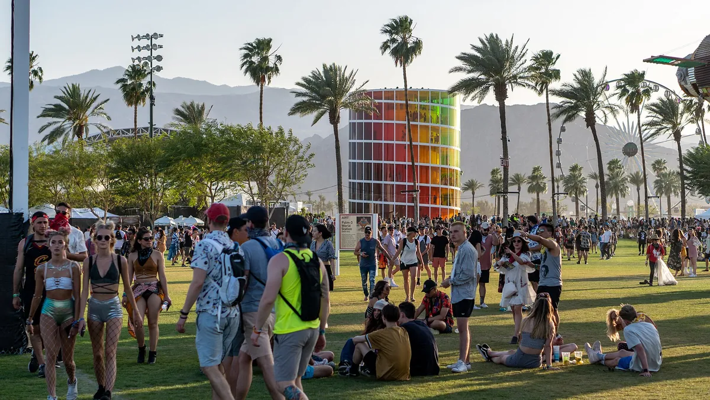
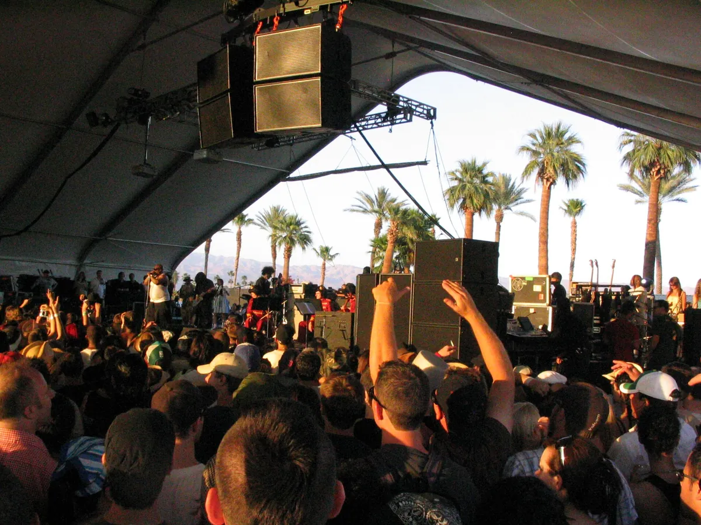
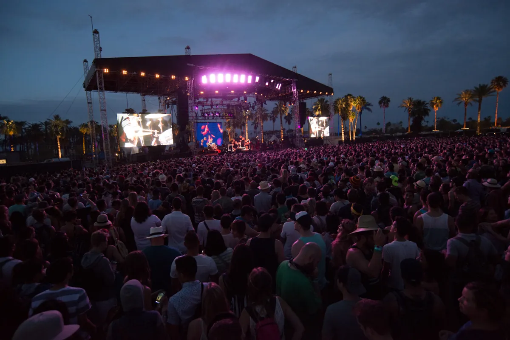
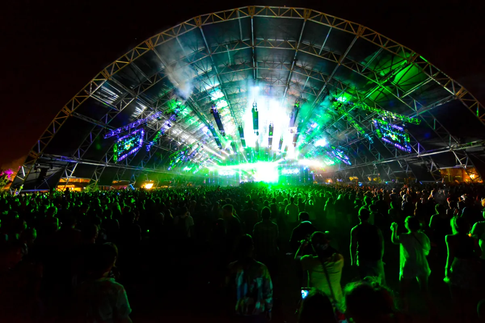

Coachella
What Is Coachella?
Two weekends every April on a polo field in the California desert. When the next one is, where it happens, how big it is, who owns it, and what plays in the Sahara tent.
A gamble on a polo field.
Coachella began as a gamble by a Los Angeles promoter that was losing bands to bigger rivals. Its first edition lost $850,000, it skipped the following year, and it grew into one of the largest and most profitable music festivals in the world.
What is Coachella festival to someone who has never been? This guide covers when Coachella 2027 is, where Coachella is and how long it lasts, how big it is, who started it and who owns it, and why a festival on a polo field got so famous. Then it answers the question this site is here for: what does the Coachella music festival actually play?
Coachella 2027: dates.
Coachella 2027 is on two weekends in April: Friday 9 to Sunday 11 April and Friday 16 to Sunday 18 April 2027, at the Empire Polo Club in Indio. The festival announced the Coachella 2027 dates in April 2026, and advance passes went on sale on 1 May 2026. The line-up had not been announced by mid-September 2026; Coachella usually releases its poster close to New Year's Day.
Where Coachella is.
Where is Coachella? At the Empire Polo Club, 81-800 Avenue 51 in Indio, California, in the Coachella Valley of Riverside County, within the Colorado Desert. The Coachella location is about 125 miles east of Los Angeles and around half an hour's drive from Palm Springs, and the festival takes its name from the valley.
The polo club covers about 1,000 acres and has twelve polo fields. The festival itself uses 78 acres of it, and with parking and camping the event covers some 642 acres. Goldenvoice has leased the grounds every year since 1993; in 2013 it bought 280 acres around the club, including the neighbouring Eldorado Polo Club, and in 2021 it signed a 28-year lease giving it full control of the site. The polo fields closed that November.

Where does Coachella take place when it is not Coachella? The same field hosts Stagecoach, Goldenvoice's country music festival, on the weekend after, and has held one-off festivals such as Desert Trip in 2016. So where is Coachella held for its two April weekends is also Goldenvoice's home field for its other festivals.
When Coachella is, and how long it lasts.
When is Coachella? In April, over two consecutive weekends. How long is Coachella? Three days each weekend, Friday to Sunday, with an identical line-up, so how many days is Coachella comes out as six festival days over nine calendar days. The two-weekend format began in 2012, when Goldenvoice chose a second, separately ticketed weekend over squeezing more people into the first; before that it was one weekend, of one, two and, from 2007, three days.
The first Coachella, in 1999, was held in October, and the move to spring in 2001 was made to beat the desert heat. Music stops at 1 a.m. on Fridays and Saturdays and at midnight on Sundays. Under a 2013 agreement with Indio, Goldenvoice pays $20,000 if a set overruns the curfew by five minutes and $1,000 for every minute after that.
How big Coachella is.
How many people attend Coachella? The city of Indio caps the festival at 125,000 people a day, a limit it raised from 99,000 in 2016, and the 2025 edition drew an estimated 245,000 over its two weekends. Those are admissions: someone with a weekend pass is counted once for that weekend.
| Year | Format | Attendance | Gross |
|---|---|---|---|
| 1999 | Two days, October | about 37,000 tickets | lost $850,000 |
| 2001 | One day, April | 32,000 | a loss |
| 2002 | Two days | more than 55,000 | nearly broke even |
| 2004 | Two days | 110,000 | first sellout |
| 2006 | Two days | about 120,000 | $9 million |
| 2007 | Three days | 186,000 | $16.3 million |
| 2010 | Three days | about 225,000 | $21.7 million |
| 2012 | Two weekends | 158,387 paid | $47.3 million |
| 2014 | Two weekends | 96,500 a day | $78.3 million |
| 2017 | Two weekends | 250,000 | $114.6 million |
| 2020 and 2021 | Cancelled for the pandemic | ||
| 2025 | Two weekends | about 245,000 (estimate) |
The money grew faster than the crowd. The 2017 edition grossed $114.6 million, the first time a recurring festival passed $100 million, and a 2012 study put Coachella's spending in the desert region at $254.4 million for that year.
The audience at home is larger again. Coachella streams on YouTube, and in 2018 the festival counted 41 million viewers in all, with 458,000 people watching Beyoncé's set at the same time.
A short history, and who owns Coachella.
The site came first. On 5 November 1993 Pearl Jam, then boycotting venues tied to Ticketmaster, played to almost 25,000 people at the Empire Polo Club. Goldenvoice's Paul Tollett booked that show, and he later said it sowed the seeds of a festival there. By 1997 Goldenvoice was losing acts to richer promoters, and Tollett began pitching a multi-stage festival of artists who were respected rather than necessarily in the charts, handing out pamphlets of the sunny polo club at a muddy Glastonbury.
When did Coachella start? On 9 and 10 October 1999, with Beck, Tool and Rage Against the Machine at the top of the bill and the Chemical Brothers and Underworld on it. About 17,000 tickets were sold for the first day and 20,000 for the second, well short of the 70,000 the promoters hoped for, and Goldenvoice lost $850,000. There was no Coachella in 2000.
It came back as a single day in April 2001, headlined by Jane's Addiction. That March, Tollett had sold Goldenvoice to AEG, Philip Anschutz's Anschutz Entertainment Group, for $7 million. Camping arrived in 2003. Rick Van Santen died that December, aged 41, and in 2004 AEG took a controlling interest in the festival itself. The 2004 edition, with Radiohead and the Cure, was Coachella's first sellout, with 110,000 people over two days; Tollett credits Radiohead with changing how artists saw it.

The festival became three days in 2007, two weekends in 2012, and in 2013 Goldenvoice agreed with Indio to keep Coachella and Stagecoach in the city through 2030. The pandemic cancelled 2020 and 2021, and Coachella returned in April 2022.
Who owns Coachella? Goldenvoice, which has belonged to AEG since 2001, and Tollett still books its line-up. The ownership has been a controversy of its own: in 2017 reports that Anschutz had given money to anti-LGBTQ and climate-denial causes led to calls for a boycott, which Anschutz called fake news, saying he would stop funding any such group he learned of.
The Coachella stages.
The Coachella stages have kept their names since the early years. The Coachella Stage is the main outdoor stage, where the headliners play. Beside it is the Outdoor Theatre, a smaller open-air stage. The tents are named after deserts: Mojave and Gobi, two mid-size tents with acts from every genre, and the Sahara, a hangar-sized tent for the top electronic acts, enlarged to 80 feet high in 2013 and rebuilt a quarter bigger near the entrance in 2018.

Smaller rooms have come and gone around them. Yuma, a small indoor tent opened in 2013, is for emerging and underground DJs. Sonora, from 2017, hosts punk and Latin acts. Despacio, co-created by James Murphy of LCD Soundsystem, played disco and club records on vinyl in 2016.
Why Coachella is famous.
The first reason is the poster. Goldenvoice releases the line-up as close to New Year's Day as it can, so Coachella is the first big festival of the year to announce, and the size of each name on the poster is argued over by agents because it sets future fees. A radius clause stops its acts from playing other North American festivals between mid-December and May.
The second is the moments. Daft Punk's 2006 show on a pyramid-shaped stage is cited as one of the most memorable in the festival's history. In 2012 a projection of Tupac Shakur performed with Dr. Dre and Snoop Dogg. In 2018 Beyoncé became the first Black woman to headline, with a show built around the marching bands of historically Black colleges that critics called historic.
The third is the record. Coachella won Billboard's Top Festival award four years running to 2014, and Pollstar's festival of the year ten times in eleven years to 2015. It has also drawn criticism for more than its owner: the headdresses worn by some attendees as cultural appropriation, and, in 2018, reports of widespread sexual harassment, after which the festival introduced its Every One programme.
The music
What the music actually is.
Coachella is not a dance festival, but it has always had one inside it. The Chemical Brothers and Underworld were on the first bill in 1999, Daft Punk's pyramid is its most remembered show, and electronic acts have headlined the main stage: Calvin Harris in 2016, Swedish House Mafia in 2022, and Anyma in 2026. In 2023 the festival closed with Skrillex, Four Tet and Fred Again, added the day before its second weekend.

The rest of the bill ranges widely. Rock headliners built it, from Radiohead and the Cure to Rage Against the Machine; hip-hop and pop took over the top lines, from Jay-Z and Kendrick Lamar to Lady Gaga, Ariana Grande and Sabrina Carpenter. Bad Bunny and Blackpink were its first Latin and Asian headliners in 2023, and Karol G the first Latina headliner in 2026.
The Sahara shows how far that spread goes. Diljit Dosanjh played the tent on the first Saturday of 2023, and the festival's clip of "G.O.A.T." from that set has about 10 million views on its YouTube channel.
Hearing Coachella from home.
Coachella streams live on YouTube, several stages at once, and its channel keeps clips from each year. The most watched Coachella video there is FISHER playing "Losing It" on Friday 12 April 2019, with about 77 million views. Full sets tend to go up on the artists' own channels. Fatboy Slim's full set from 2026, nearly two hours, shot by the festival, has about 1.1 million views on his.
Coachella shares the American desert with EDC Las Vegas, and our guides cover both, as well as Tomorrowland, Ultra, whose Miami weekend is one of the few festivals Coachella's radius clause lets its acts announce early, and Burning Man. And the Selector plays one full DJ set at random from 62,877, if you would rather not choose.
Coachella FAQ.
When is Coachella 2027?
On Friday 9 to Sunday 11 April and Friday 16 to Sunday 18 April 2027, at the Empire Polo Club in Indio, California.
How long is Coachella?
Two weekends of three days, Friday to Sunday, with the same line-up each weekend: six festival days over nine calendar days in April.
Where is Coachella held?
At the Empire Polo Club, 81-800 Avenue 51, Indio, California, in the Coachella Valley, about 125 miles east of Los Angeles and half an hour from Palm Springs.
How many people go to Coachella?
Up to 125,000 a day, the cap the city of Indio set in 2016. The 2025 edition drew an estimated 245,000 over its two weekends.
Who owns Coachella?
Goldenvoice, the promoter that founded it, which has been part of AEG, Philip Anschutz's Anschutz Entertainment Group, since 2001. AEG took a controlling interest in the festival in 2004, and Paul Tollett still books it.
When did Coachella start?
On 9 and 10 October 1999, at the Empire Polo Club, with Beck, Tool and Rage Against the Machine headlining. It skipped 2000 and moved to April from 2001.
Sources.
Continue reading
Read next.
 A14Guide / Tomorrowland / ~10 min
A14Guide / Tomorrowland / ~10 minTomorrowland Festival: Where It Is, How Big, and the Music
A park in Boom, Belgium, that most of the world knows through a livestream: where Tomorrowland happens, how big it is, who owns it, and what plays off the Mainstage.
Read article → A15Guide / EDC Las Vegas / ~11 min
A15Guide / EDC Las Vegas / ~11 minEDC Las Vegas: What It Is, How Big, and the Music
Electric Daisy Carnival at the Las Vegas Motor Speedway: where EDC happens, how half a million people a year grew out of a field in Chino, and what plays past kineticFIELD.
Read article → A16Guide / Creamfields / ~11 min
A16Guide / Creamfields / ~11 minCreamfields Festival: Where It Is, How It Grew, the Music
Four days on the Daresbury estate every August bank holiday: where Creamfields happens, how a Liverpool house night grew into it, who owns it, and what plays beyond the Arc Stage.
Read article → A17Guide / Parookaville / ~10 min
A17Guide / Parookaville / ~10 minParookaville Festival: Where It Is, Who Runs It, the Music
A festival staged as a city on an old RAF airbase at Weeze: where Parookaville happens, how three friends built it, how many people go, who runs it, and what plays there.
Read article →